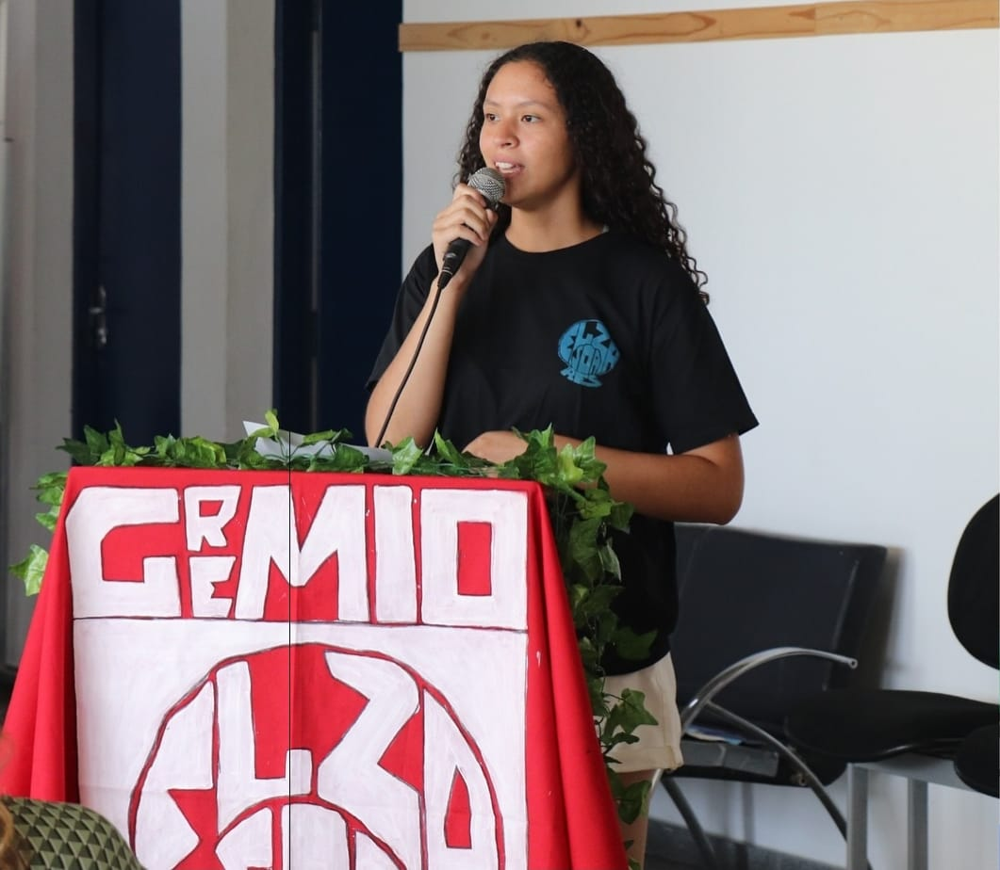
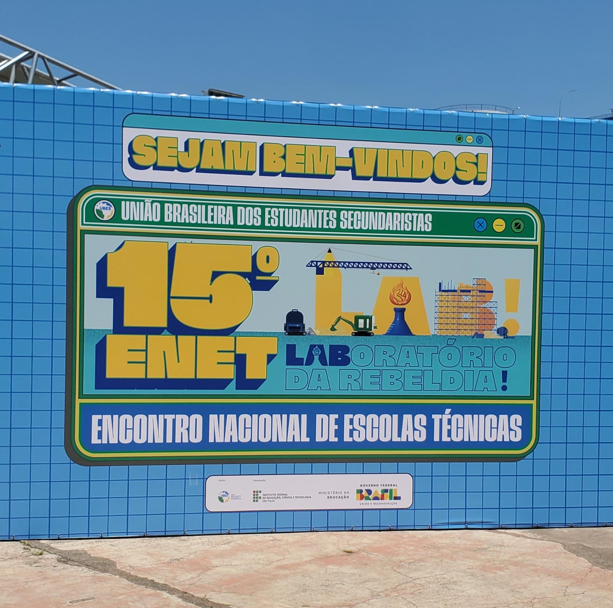
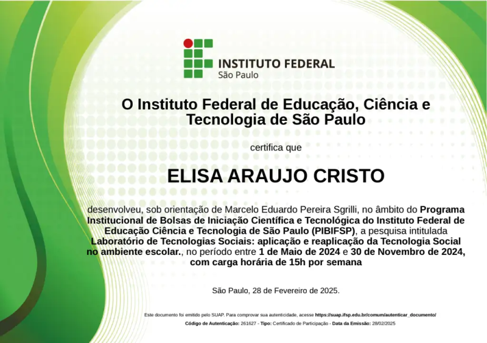
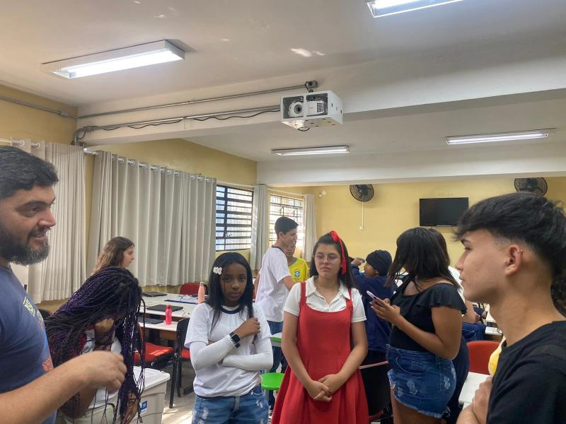
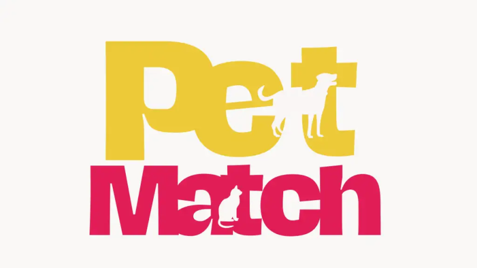
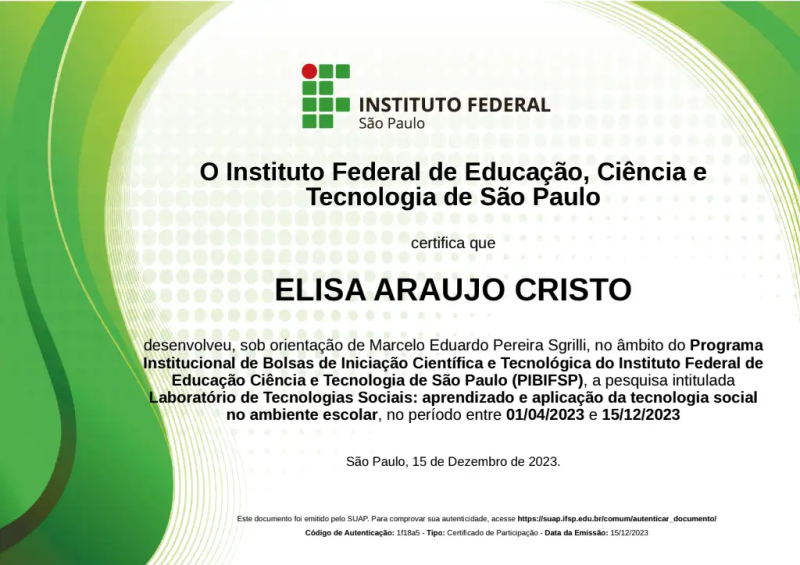
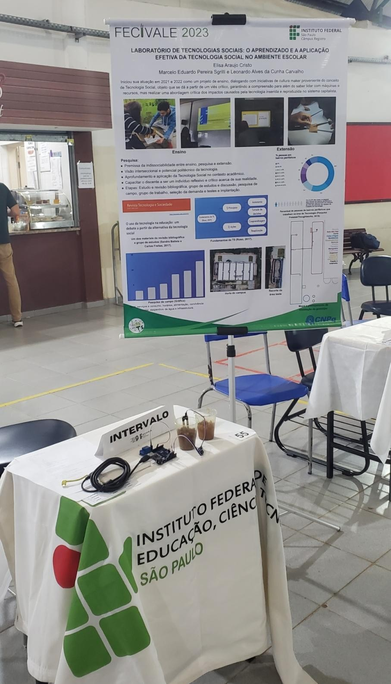
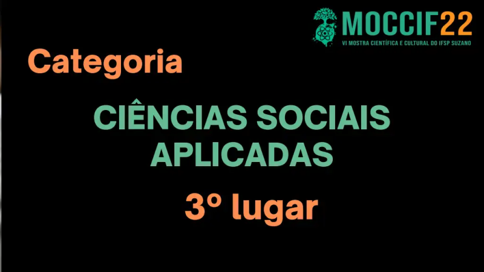
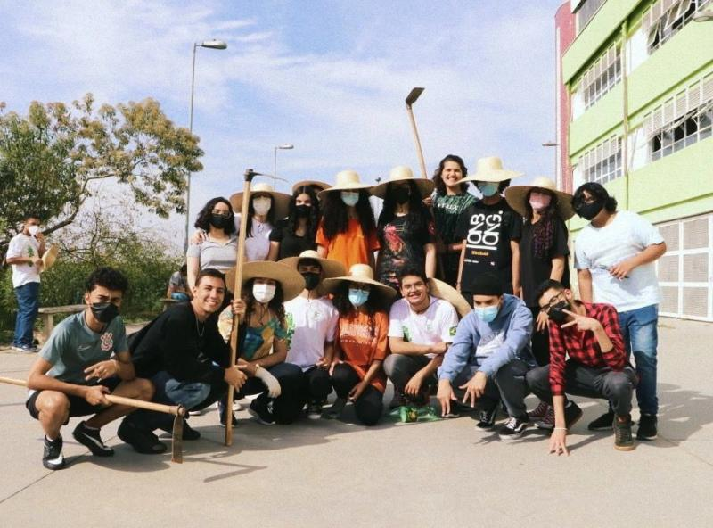
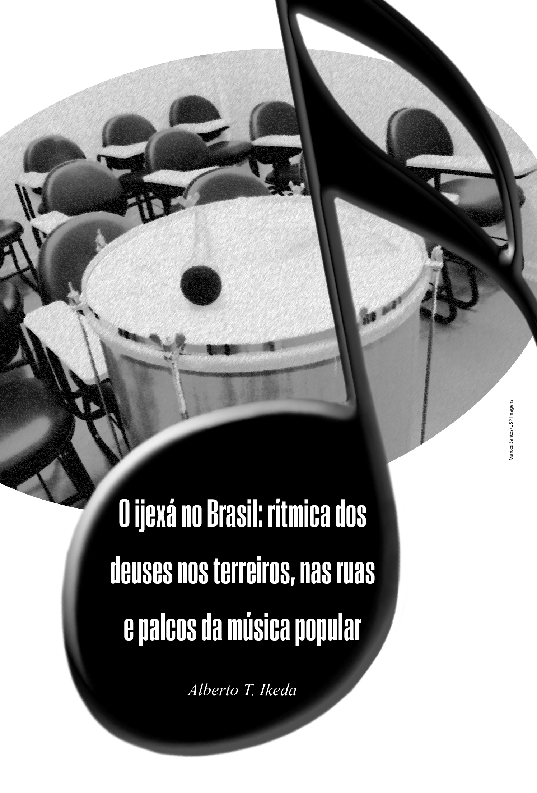

Esta é uma página dedicada à apresentação dos meus projetos concluídos e em andamento.
Nela, compartilho desenvolvimentos e criações que refletem meu aprendizado, interesses
e experiências ao longo da jornada acadêmica e pessoal.
Grêmio Estudantil Elza SoaresInstituto Federal de São Paulo - Campus São Miguel PaulistaMarço de 2021 - Dezembro de 2024
Iniciei minha trajetória no grêmio estudantil como colaboradora em 2021, participando
das atividades e adquirindo experiência na organização interna. Em 2022, assumi o
cargo de Diretora de Comunicação, sendo responsável por informar e divulgar todas
as atividades e comunicados referentes ao grêmio, ao campus e aos movimentos externos,
assegurando que toda a comunidade permanecesse plenamente informada. No ano seguinte,
em 2023, atuei como Vice-Presidente, coordenando e oferecendo suporte às demais
diretorias do grêmio, solucionando demandas relacionadas ao campus, participando
de reuniões para opinar e tomar decisões, além de estabelecer e fortalecer o vínculo
entre o grêmio, a instituição e a comunidade. Em 2024, exerci a função de Diretora de
Relações Acadêmicas, colaborando na comunicação com a comunidade externa e com outras
instituições de ensino, organizando visitas a locais de caráter educacional e atendendo
com eficácia às demandas internas. |
 1° Seminário Estudantil da Zona Leste  Fala no Encontro Nacional de Escolas Técnicas (ENET) |
Laboratório de Tecnologias Sociais: aplicação e reaplicação da Tecnologia Social no ambiente escolarPIBIFSPMaio de 2024 - Novembro de 2024 O projeto visa dar continuidade à pesquisa iniciada em 2023, intitulada Laboratório de Tecnologias Sociais: O aprendizado e a aplicação efetiva da Tecnologia Social no ambiente escolar, que buscou compreender as possibilidades de aplicação da Tecnologia Social na construção de processos de ensino-aprendizagem. Dentre os frutos obtidos com a pesquisa, destaca-se o processo de implementação de um sistema de irrigação automatizado alimentado com energia fotovoltaica na horta do campus. O protótipo foi elaborado a partir das discussões teóricas com o objetivo de viabilizar uma experiência prática de aplicação dos princípios metodológicos do desenvolvimento de tecnologias sociais na realização de um projeto com os estudantes. Dessa forma, o projeto visa dar prosseguimento ao estudo através da conclusão do protótipo, bem como sua reaplicação em uma escola pública da região. A reaplicação consiste numa etapa importante do processo de desenvolvimento da tecnologia social e não é uma mera replicação tecnológica, uma vez que mobiliza outras pessoas e demandas da comunidade, colocando-as como agentes da produção tecnológica, mas respeitando e agregando os conhecimentos e vivências dos indivíduos para estabelecer um ambiente de coaprendizagem. |
  Colaboração com a escola EMEF Antonio Carlos de Andrada e Silva |
PetMatchTechnovation GirlsFevereiro de 2022 - Junho de 2024
O Technovation Girls é uma competição global voltada para meninas, que
oferece a oportunidade de desenvolverem soluções tecnológicas, como
aplicativos ou projetos de inteligência artificial, com o objetivo de
resolver demandas reais de suas comunidades. |
 Apresentação realizada na Oracle Canal no YouTube com as publicações feitas pela equipe |
Laboratório de Tecnologias Sociais: aprendizado e aplicação da tecnologia social no ambiente escolarPIBIFSPAbril de 2023 - Dezembro de 2023 O Laboratório de Tecnologias Sociais do Campus Avançado São Paulo - São Miguel Paulista iniciou sua atuação em 2021 e 2022 como um projeto de ensino, dialogando com iniciativas de cultura maker a partir do conceito de Tecnologia Social que permite não apenas lidar criativamente com máquinas, insumos e projetos, mas também uma abordagem crítica dos impactos e da lógica subjacente à tecnologia no sistema capitalista. Esta tecnologia, dita convencional, aparece de maneira tão hegemônica que conceber alternativas soa como algo distante. O presente projeto de pesquisa tem em vista o estudo aprofundado do campo da Tecnologia Social, visando investigar a viabilidade de sua implementação num contexto de formação técnica integrado ao Ensino Médio. Tal implementação se dá tanto na consolidação do debate teórico-conceitual quanto na estruturação do laboratório no plano prático e cotidiano. |
  Estande de apresentação no FECIVALE 2023, na cidade de Registro, SP |
Laboratório de Tecnologias SociaisInstituto Federal de São Paulo - Campus São Miguel PaulistaAbril de 2022 - Novembro de 2022 O projeto teve como objetivo principal dar continuidade ao processo de implementação do Laboratório de Tecnologias Sociais no Instituto Federal de São Paulo - Campus Avançado São Miguel Paulista. A proposta central não se limitou a aprofundar as práticas e discussões acerca da cultura maker; o foco foi explorar o potencial educativo do conceito de tecnologia social e seus desdobramentos, como as ideias de adequação sociotécnica e cidadania sociotécnica, além de, especificamente no campo educacional, aplicar a teoria pedagógica construcionista e aspectos do pensamento computacional. |
 3º Lugar na Categoria Ciências Sociais Aplicadas na MOCCIF 2022  Momento em que se realizou o primeiro encontro para a construção de hortas verticais |
Ao som dos tambores: música e tecnologia no ensino de história e cultura afro-brasileiraCNPqOutubro de 2021 - Março de 2022
Projeto de pesquisa que teve como foco o estudo e a valorização dos valores
culturais da população afro-brasileira e sua influência na formação do Brasil.
A iniciativa uniu pesquisa histórica e expressão cultural com o uso de tecnologia. |

O ijexá no Brasil: rítmica dos deuses do terreiro, nas ruas e placos da música popular |